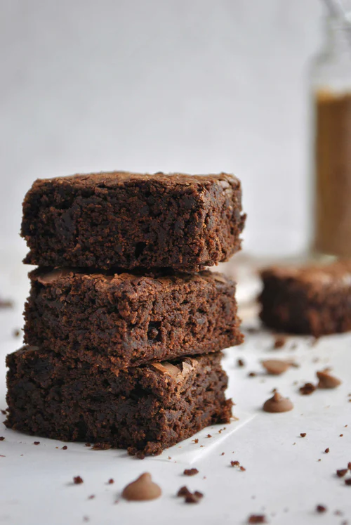

My Fudgy Brownies Recipe

Description
I know that saying these are the “best brownies, ever” is a bold statement, but we truly believe it. I love brownies that are rich and extra chocolaty. These brownies with dense, fudgy middles and crinkly tops absolutely deliver! These are perfect for boxed brownie lovers — the dense, moist, and fudgy texture is not all that different from what you can expect from the boxed mixes. It get’s better, though. These brownies are much more flavorful than anything made from a box. They taste amazing.
Ingredients
- Corona Chocolate: 230 g
- Melted Butter: 3/4 cups
- Powdered Sugar: 1 1/4 cups
- Eggs: 2 eggs
- Vanilla: 2 tspn
- Flour: 3/4 cups
- Cocoa Powder: 1/4 cups
- Salt: 1 pinch
Steps
- Melt 115 grams of the chocolate and save the rest for later.
- Whisk the butter and the sugar very thoroughly then add the eggs and the vanilla and whisk them together.
- Add the molten chocolate and whisk then add the flour, the cocoa powder and the salt pinch carefully while whisking.
- Add the rest of the chocolate chunks and mix them.
- Prepare the pan and add the mixture and bake (180°C for 20-25 minutes).
- Full recipe can be found here.
Back to the Homepage